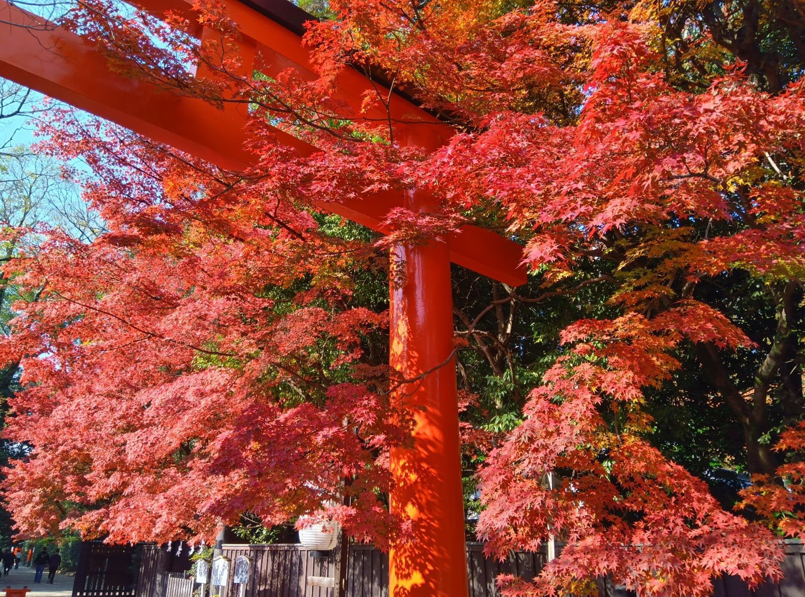

Day 1: 11/30 (日) 抵達與下鴨神社
✈️ 抵達關西機場 (KIX)
搭乘 Haruka 特急列車前往京都車站。
⛩️ 下鴨神社 (世界遺產)
走訪糺之森，感受深秋古樹的寧靜。
💡 提醒
入住旅館後，盡快購買京都市巴士一日券，方便後續幾天使用。
Day 2: 12/01 (一) 嵐山一日遊
🚂 嵯峨野觀光小火車
搭乘小火車欣賞保津峽谷的紅葉景色。需提早預訂車票！
🎋 嵯峨野竹林之道
感受壯觀的竹林氛圍。適合早晨前往，避開人潮。
🍣 午餐推薦：豆腐料理
湯豆腐是嵐山特色。推薦順正湯豆腐。
Day 3: 12/02 (二) 古典名勝巡禮

✨ 金閣寺 (鹿苑寺)
欣賞湖面倒影中的金光閃閃的寺廟。
🪨 龍安寺
觀賞著名的枯山水石庭，感受禪意。
🍵 購物
在西陣織會館附近可以購買特色絲織品小物。
Day 4: 12/03 (三) 清水寺與祇園花見小路

🏯 清水寺
從清水舞台眺望楓葉海。建議早上參觀避開旅行團。
⛩️ 地主神社
清水寺附近的戀愛結緣神社。
🚶 祇園花見小路
尋找藝伎的蹤跡。傍晚前往氛圍更佳。
Day 5: 12/04 (四) 千本鳥居與奈良小鹿

🦊 伏見稻荷大社
走訪著名的千本鳥居，建議穿著舒適鞋子。
🦌 奈良公園與東大寺
從京都車站搭乘 JR 前往奈良。記得餵食小鹿仙貝！
Day 6: 12/05 (五) 賦歸

💡 提醒
搭乘 Haruka 特急列車返回關西機場。確認車票時間，並預留足夠的退稅時間。
💸 最後購物
可在京都車站的伊勢丹百貨進行最後採買。